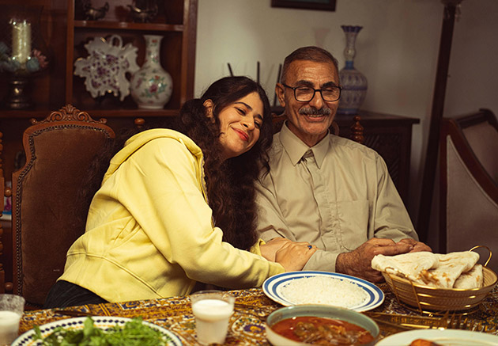
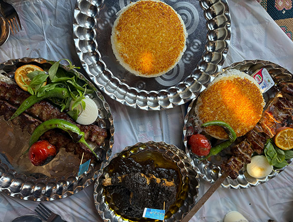
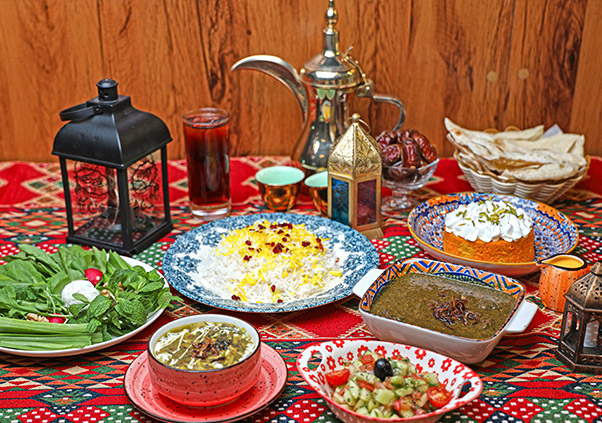

Desde tiempos antiguos, la comida en Irán no solo cumplía una función alimenticia, sino también social y cultural. Compartir alimentos era una forma de hospitalidad y unión familiar, tradición que continúa siendo fundamental en la cultura iraní actual.


Ingredientes como el arroz, las hierbas frescas, el azafrán, las nueces, la granada y las carnes cocinadas lentamente comenzaron a adquirir importancia dentro de la cocina persa y se mantuvieron presentes a lo largo de los siglos.
Además, la gastronomía iraní estuvo estrechamente relacionada con elementos culturales como los jardines persas, la poesía, las celebraciones y las festividades tradicionales, donde la comida adquiría un significado simbólico asociado a la abundancia, la prosperidad y la convivencia.

Con el paso del tiempo, la cocina persa influyó en otras gastronomías de regiones vecinas, dejando huella en tradiciones culinarias de Turquía, Asia Central, India y el mundo árabe. Actualmente, la gastronomía iraní es reconocida como una expresión viva de la identidad histórica y cultural del país.